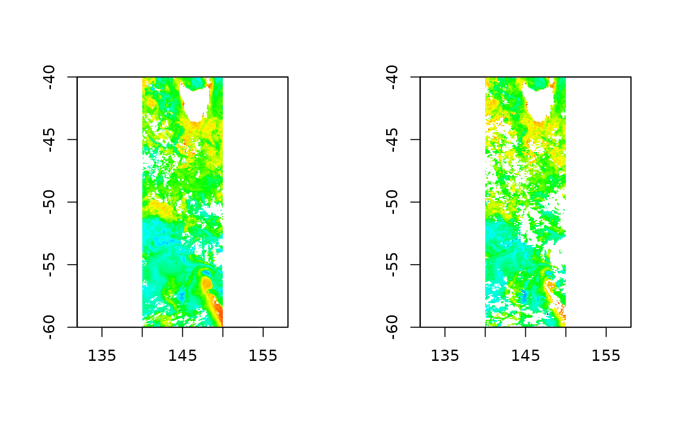

vignettes/chlorophyll.Rmd
chlorophyll.RmdThe function readchla can be used to read a mean value of remotely sensed chlorophyll-a for an arbitrary set of dates (days) within a region, either from the MODISA (2002-) or SeaWiFS (1997-2012) platform and with the Johnson 2013 or NASA algorithm.
For example, provide a vector of dates, and a spatial extent (longlat) to produce a raster map at the native resolution of the Level-3 Mapped product for given product.
library(raadtools)
#> Loading required package: raster
#> Loading required package: sp
#> global option 'raadfiles.data.roots' set:
#> '/rdsi/PRIVATE/raad/data 2021-03-29 23:35:11
#> /rdsi/PRIVATE/raad/data_local 2021-03-29 23:38:25
#> /rdsi/PRIVATE/raad/data_staging 2021-03-29 23:38:26
#> /rdsi/PRIVATE/raad/data_deprecated 2021-03-29 23:38:51
#> /rdsi/PUBLIC/raad/data 2021-03-30 00:01:51'
#> Uploading raad file cache as at 2021-03-30 00:04:34 (1063221 files listed)
#> Warning in fun(libname, pkgname): rgeos: versions of GEOS runtime 3.9.0-CAPI-1.16.2
#> and GEOS at installation 3.8.1-CAPI-1.13.3differ
dates <- seq(as.Date("2010-01-01"), by = "1 day", length = 20)
ext <- extent(140, 150, -60, -40)
modis <- readchla(dates, ext, product = "MODISA")
seawifs <- readchla(dates, ext, product = "SeaWiFS")
op <- par(mfrow = c(1, 2))
chlp <- palr::chlPal(palette = TRUE)
#> Warning: 'palr::chlPal' is deprecated.
#> Use 'chl_pal' instead.
#> See help("Deprecated")
plot(modis, col =chlp$cols, breaks = chlp$breaks, legend = FALSE)
plot(seawifs, col =chlp$cols, breaks = chlp$breaks, legend = FALSE)
par(op)There is a fairly complex stack of infrastructure underneath this function to make this possible.
The L3 RRS bin data is downloaded and processed for Johnson and NASA chlorophyll, and stored in sparse form as a table with bin number and chlorophyll-a values.